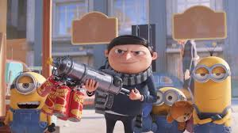

Senjata Aneh dan Canggih
Di balik tingkah lucunya, Minions sering menggunakan senjata-senjata super unik ciptaan Gru! Mulai dari senjata penyusut, es krim penembak, hingga gadget absurd yang bikin lawan kebingungan. Senjata-senjata ini tidak hanya canggih, tapi juga kocak dan ikonik — kombinasi sempurna antara teknologi dan kekonyolan!
